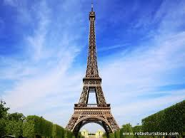

En esta página encontraras la información de la presentación de los gemelos. Encontrarás información sobre el viaje a Francia, todos los gastos y precios, resumen de su gobierno, de su sistema económico, su gastronomía y algunos de los lugares turísticos de este gran país. Como todo el mundo conoce, la capital de Francia es Paris, pero hay muchas cosas muy sorprendentes que está en Francia que no son de Paris, y hoy descubrirás algunas de ellas.
Coste del viaje
El total del viaje es $3,318.42 y dura 1 (una) semana, y se divide en los siguientes puntos:
- El costo del pasaje a Paris es de $1029 1 escaladas en ida y 2 escaladas de vuelta
- En ida, la escalada es en Philadelphia.
- En vualta, la priemra escala es en Londres-Heathrow, y la segunada es en Miami.
- El hospedaje será en Campanille Smart Lyon Est, y son $132 la noche, o en una semana
son $1056.15. E incluye:
- Parking
- Free Wifi
- Mascotas
- Desayuno
- Bar
- Y muchas cosas más
- La comida fue aproximada con el promedio de una comida en parís, y nos dio el resultado de $700
- La transportación, se puede alquilar un auto con $350, o usar el transporte público con $111.27. Utilizamos el transporte público, si alquilan un auto, el total sería $3,557.15.
Gobierno de Francia
Su presidente es Emmanuel Macron
El país es democracia moderna, y el presidente gobierna por 5 años.
El sistema político de Francia se define como semipresidencial, lo que significa que hay un presidente con poderes importantes, un Ejecutivo dirigido por un primer ministro y un parlamento al que rinde cuentas el Gobierno.
Sistema económico
La moneda del país es el euro
Además es el quinto país con la economía mas grande de todo el mundo. La mayor aportación viene de la agricultura, ganadería y turismo.
Otras actividades que aportan a la economía son:
- Industria, especialmente la del:
- Automóvil
- Construcción
- Energía
- Minería
- Comercio
- Bancos
Gastronomía
Los sabores de Francia se caracterizan por el refinamiento, el énfasis en trabajar con frutos de mar, la mantequilla, las salsas y la manzana. Entre sus platos emblemáticos están:
- Aligot: puré de patatas espeso con queso sin refinar.
- Quenelle: pasta de sémola de trigo que en apariencia parece una albóndiga o salchicha.
- Cassoulet: guiso de alubias blancas acompañado de diferentes tipos de carnes.

- Fondue de queso: crema de queso que acompaña a otros alimentos o se toma remojando trozos de
pan en ella.
- : comida vegetariana preparada con una amplia variedad de hortalizas de la región de Niza.
- Crepes: de los postres más insigne e internacional de Francia. Una tortilla de harina de trigo
fina que se acompaña de cualquier otro ingrediente.
- Macarons: galleta cuya base es clara de huevo con almendra y azúcar.
Lugares turísticos
Algunos de muchos lugares turísticos que decidimos mostrar son:
- Torre Eiffel
 - Ruta de Lavanda
- Catedral de Notre Dame
- Arco del triunfo
- Eurodisney
- Museo Picasso
- Y otras que resaltan son:
- Opera garnier de parís
- Palacio de Versalles
- Gargantas de Verdon